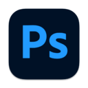

Skills
These are the skills I have.
Pen Tool, Key Frame, Transform, Effect 등을 사용하여 모션그래픽, 애니메이션 제작, 영상 편집을 할 수 있습니다.
After Effects
영상을 잘라내고, 합치고, 재배치한 것을 오디오 편집, 영상 보정, 효과와 전환을 사용하여 다양한 영상을 만들어 낼 수 있습니다.
Premiere Pro
안녕하세요
Photoshop

안녕하세요
HTML
안녕하세요